London holds a spot as one of the foremost shopping epicentres in the world. Explore a wide range of modern yet classic goods. The city is full of wonderful and quirky shopping spots. On this page, we will only get to delve into some of London's greatest shopping departments and individual stores, but that does not mean that great shops are limited to the ones in this guide.
Shopping Areas
Oxford Street
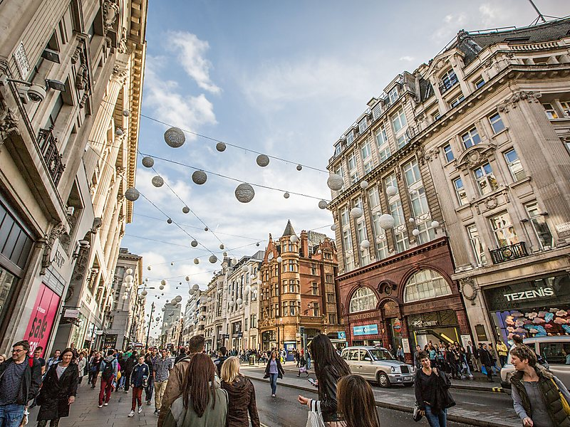As the heart of London shopping, Oxford street holds the record for one of the most exclusive selections of shopping experiences (including over 300 shops and restaurants) all enclosed within ONE STREET. Are you ready to shop till you drop? Off of the main street, head into one of the many side streets for a good time and some sweet treats.
Covent Garden
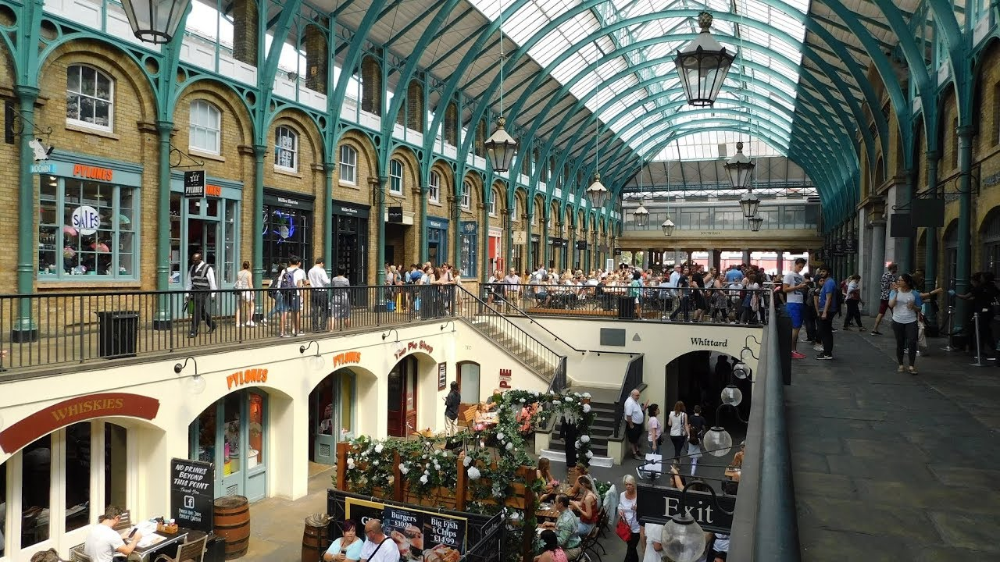Displaying a range of world-class fashion, Covent Garden is the prime destination for shopping, dining, and entertainment. It is home to some of the best foodies, fashionistas, and theatre-lovers.
Leicester Square
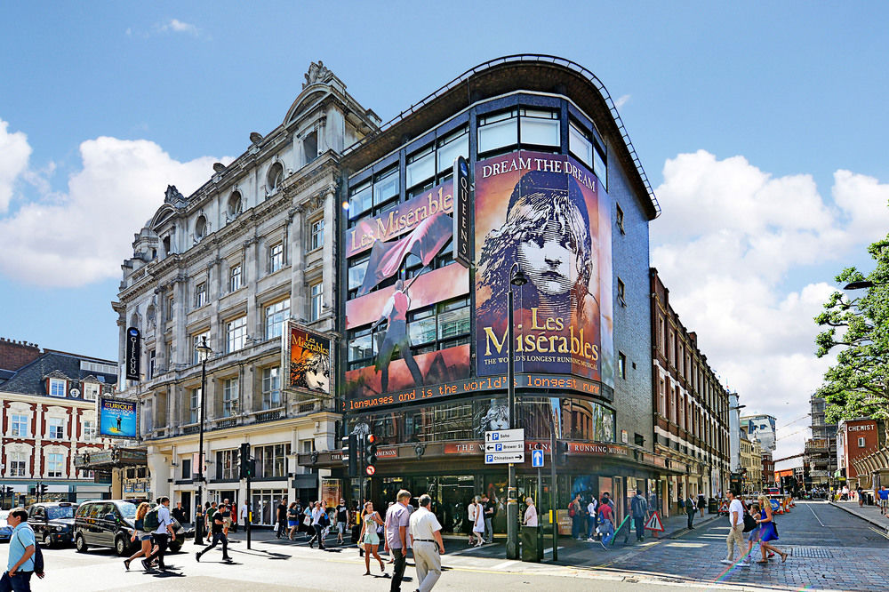Running 24/7 since 1670, Leicester is a prominent staple in London shopping. It is known as the "beating hear of London's West End" as it sees over 2.5 million visitors EVERY WEEK! Some of the best shows and theatres in the city are stationed here, in Leicester Square. Make unforgettable memories with family and friends as you explore this charming area.
Fun Fact: Feeding pigeons in Trafalgar Square (not to be confused with Leicester Square) is banned. So don’t do it!
Westfield London
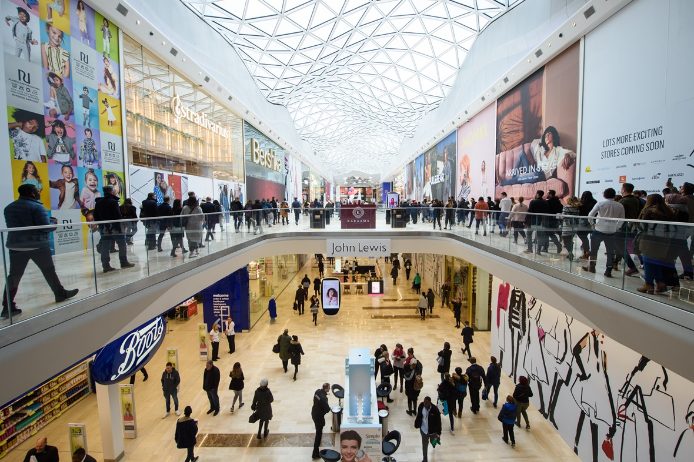Home to over 300 shops with brands ranging from high street to designer in an eccentric character of a building, Westfield mall has been called the "ultimate place to shop in London". Containing the village, one of London's premier designer shopping destinations with over 40 luxury brands, you as a visitor will have access to some of the most stylish and glamorous goods money can buy.
Bond Street
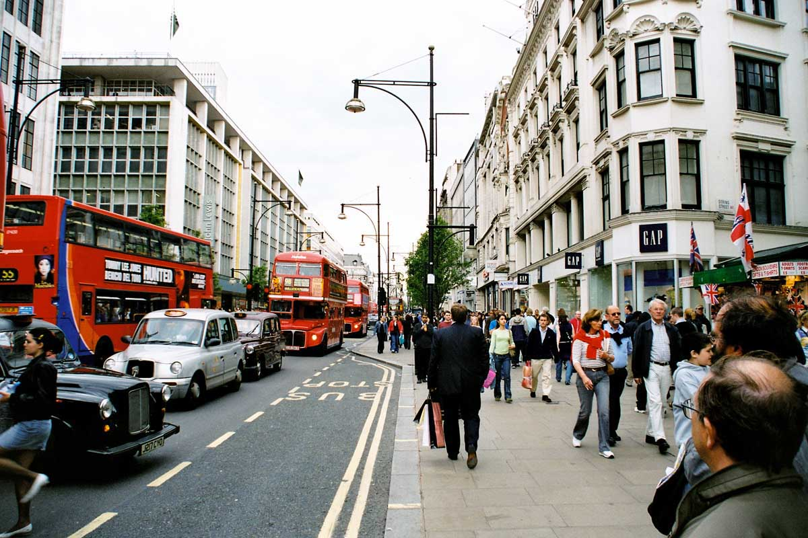London's famous Bond Street is often regarded for it's excessive wealth of sophisticated shops, "exclusive brands, designer fashion, luxury goods, fine jewels, art and antiques." Its unique and tasteful environment is what attracts so many people to shop at Bond Street.
London Bookstores
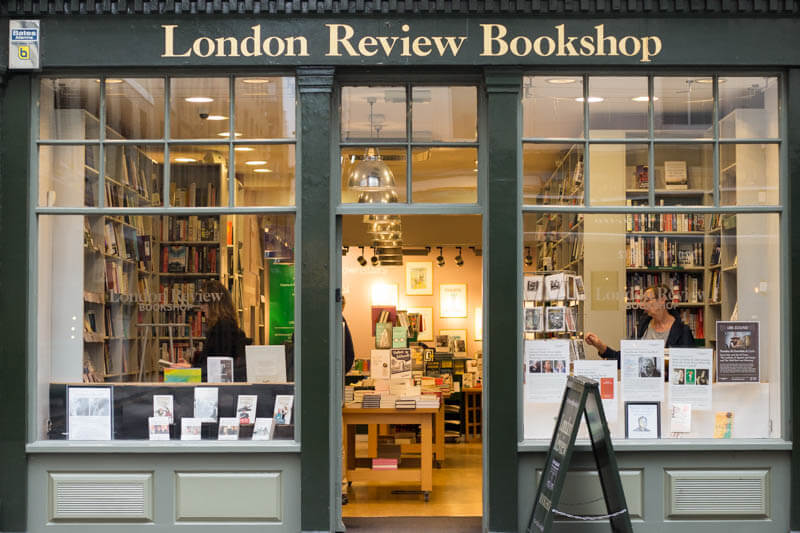London is home to several great works of literature. Take advantage of the city’s passion for liberal arts.
Stores and Chains
Harrods
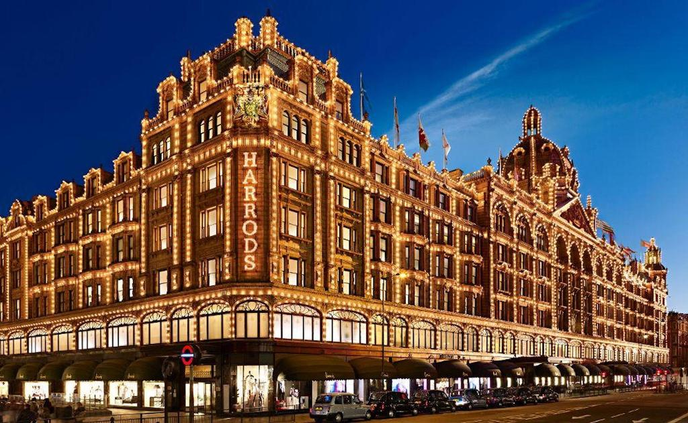The most authentic department store in London, Harrods is known to sell all things and to cater to all people.
Hamleys
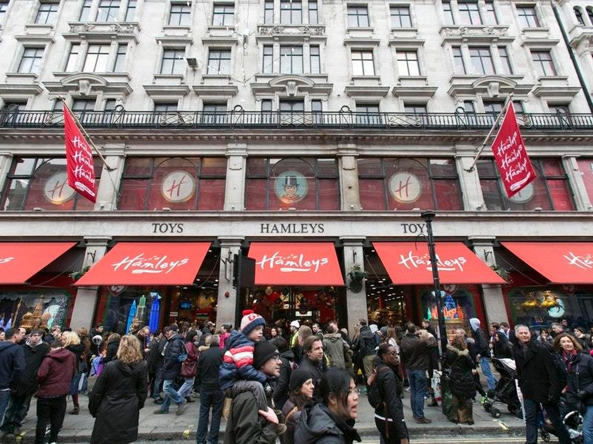The oldest and largest toy shop in the world, providing only the finest toys and games in the world. They provide the most premium quality items and have been since 1760.
M&M's World
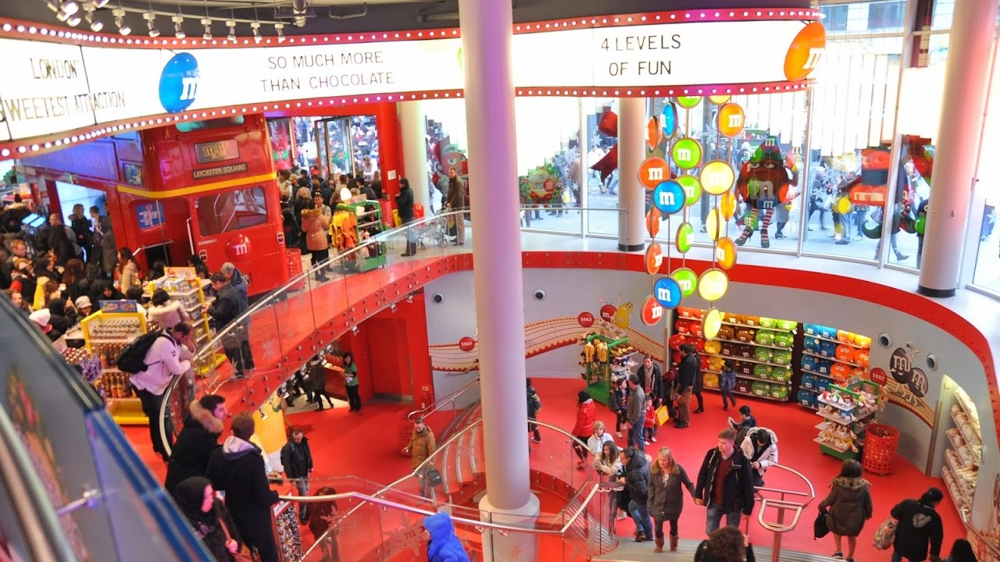This is the largest candy store in the ENTIRE WORLD at 35,000 sqft. It is M&M’s largest store, and is 4 floors tall! This one is one of my personal favourites!
LEGO Store
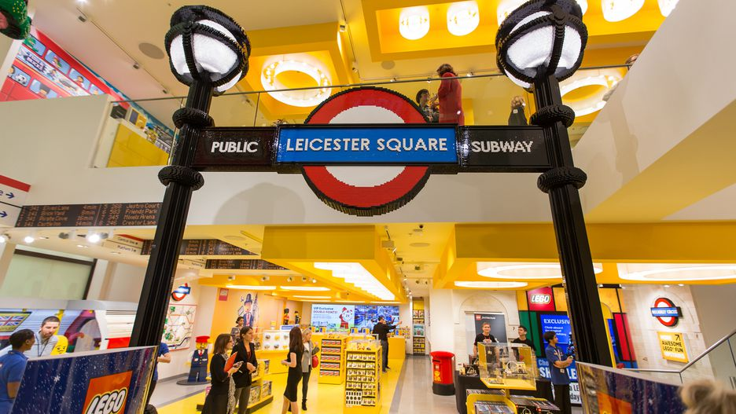Wanting to revisit childhood or happen to have some kids of your own? Visit the largest LEGO store in the world. This flagship store neighbours the astonishing M&M store in Leicester Square. See massive constructions of iconic London figures such as Big Ben, Sherlock Holmes, and an Underground train car.
Primark
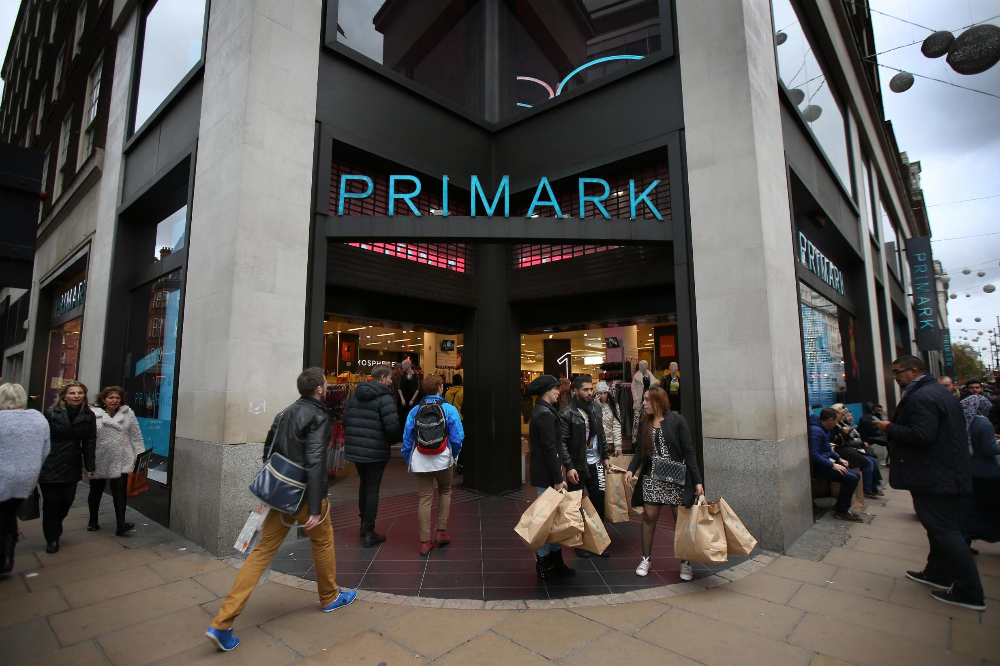One of the more affordable department stores in the city. I saw I lady with 8 maxed-out shopping bags.. still shopping. If you're looking for a bargain, this department store is for you. You can find their flagship store in Oxford Circus, but they have many locations across London
Ted Baker
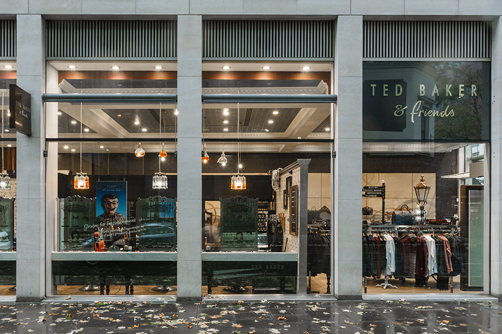Go visit this iconic designer's store in London. Be on the lookout for three different locations they offer a barber shop service! It's quite snazzy and it'll leave you looking fresh and sweet!